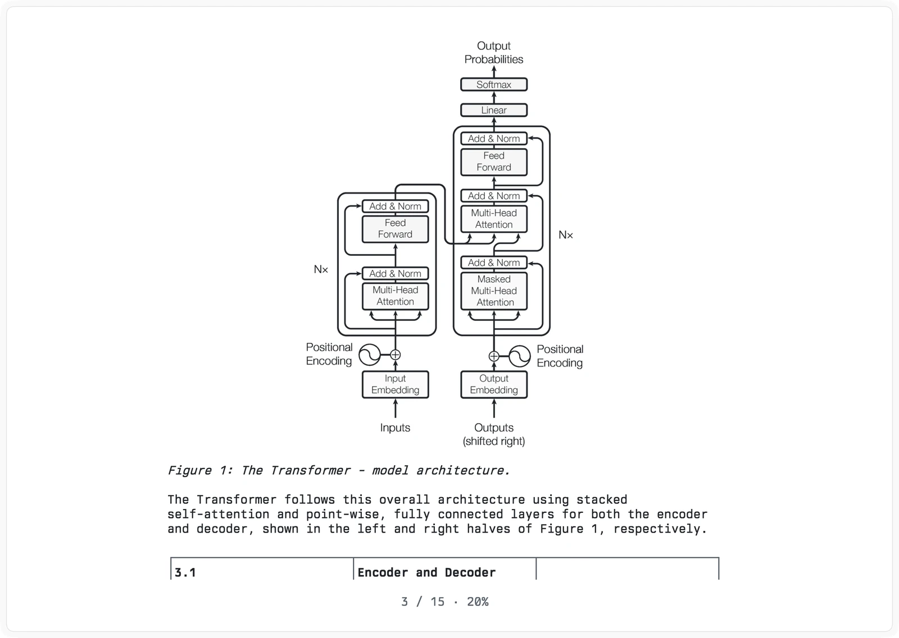
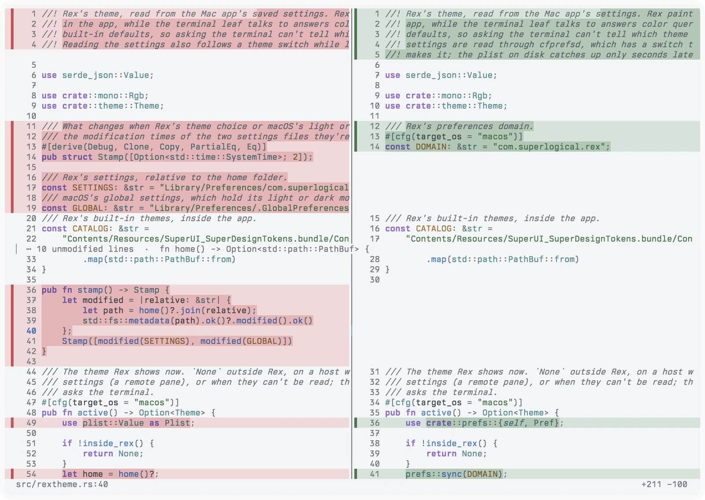
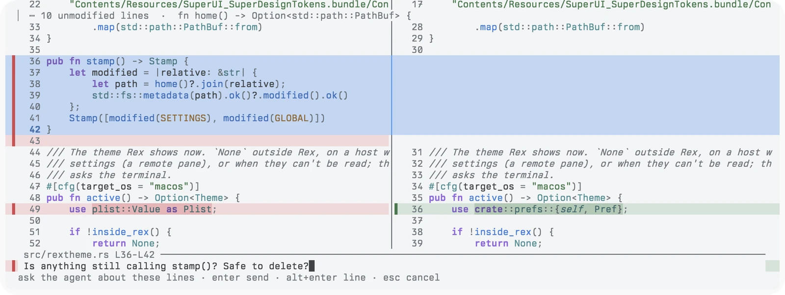
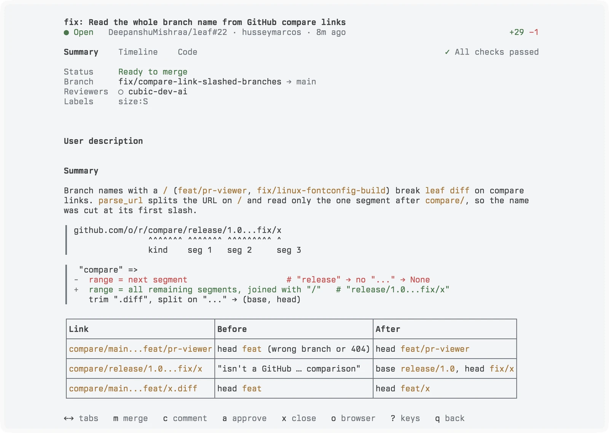

Read papers books and docs Review diffs and pull requests All in your terminal
leaf turns what you read into clean pages in your terminal, and sends anything you select to the coding agent running beside you.
curl -fsSL https://leaf.dipxsy.app | sh
macOS and Linux · leaf upgrade keeps it current

"Attention Is All You Need", opened from its arXiv link. The figure is a real image in the terminal.
Give it a file or a link. Get a page you can actually read.
Figures and tables stay where the author put them. Every document reopens where you stopped.
- Papers
PDFs and arXiv links, with headings and figures in place.
leaf open paper.pdf - Books
EPUBs laid out into pages, with bookmarks.
leaf open book.epub - Docs
Markdown with tables, alerts, colored code and diagrams.
leaf open README.md - The web
Articles without the menus, banners and sidebar.
leaf open https://… - Diffs
Your working tree, a branch, any range or a patch.
leaf diff - Pull requests
Everything on GitHub that's waiting on you.
leaf pr
See what changed before you push.
Old code on the left, new code on the right, the changed words marked. Comment on any lines and send it to your agent or to GitHub.
leaf diff --branch

Ask your agent about the lines in front of you.
Select some lines and press @. Your question goes to Claude Code, Codex or opencode with the file, line numbers and the code around it.

Get through your review queue.
See checks, the description and the timeline, read the code, then approve, comment or merge. No browser tab needed.
leaf pr


Built into Rex.
leaf ships as a native Rex plugin. Every action shows up in the command palette, documents and diffs open in the pane beside you, and questions go to the agent already running in your session.
leaf rex install
- Leaf: Open Document…PDF, EPUB, markdown or a link
- Leaf: Review This Branchthis branch against its base
- Leaf: Pull Requeststhe ones waiting on you
- Leaf: Ask Agent About Selection⇧⌘A
- Leaf: Choose Agent…claude, codex, opencode…
- Leaf: Read Aloud / Pausefrom the selection
The small things.
Highlight and draw
Six colors. A rough circle comes out clean.
Read aloud
Hundreds of voices, from half speed to 4×.
Find anything
A phrase still matches when it breaks across lines.
Code and diagrams
Syntax colors, and mermaid blocks drawn as diagrams.
Back where you stopped
Every document reopens at your page or line.
Stays local
One file on your machine. No account, no sync.
Open your next paper in leaf.
curl -fsSL https://leaf.dipxsy.app | sh
Or with Rust: cargo install leaf-reader